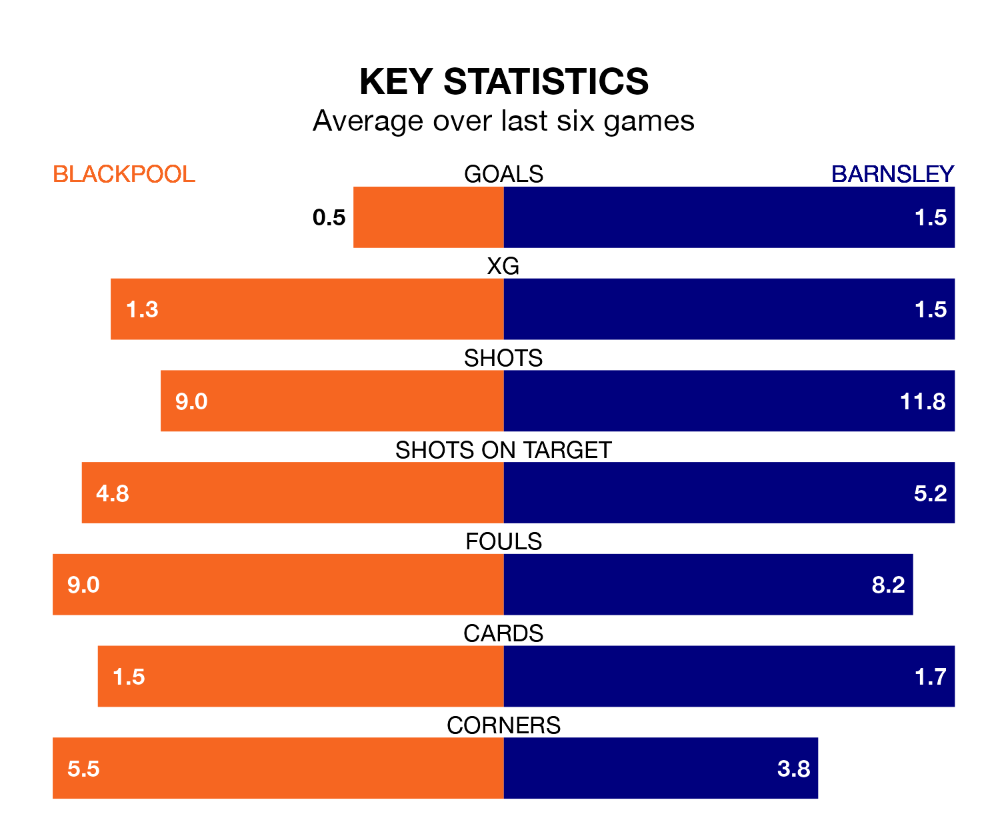

Barnsley face a challenge to maintain their high-scoring form away against a tight Blackpool defence on Saturday.
With 79 goals in 44 games, Barnsley are the third-highest scorers in EFL League One ahead of the 3pm kick-off at Bloomfield Road.
They face a Seasiders side who have scored 60 in 44 matches, but conceded only 43 goals, putting them fourth among the league's tightest defences – only Portsmouth, Derby County and Lincoln City have conceded fewer goals.
With Daniel Grimshaw between the sticks, Blackpool can rely on one of the league's safest pair of hands. He has kept 18 clean sheets in his 43 appearances this season, and only one other 'keeper – Lincoln City's Lukas Jensen – has been able to prevent the opposition scoring on more occasions in EFL League One.
In Barnsley's net, Liam Roberts has eight clean sheets in 36 games. He has conceded a goal every 70 minutes, 40% more often than the 97 minutes between goals for Grimshaw.
In the last 10 years, Blackpool and Barnsley have played each other on 11 occasions. Blackpool won six of them, Barnsley three, and they drew twice.
On average, the Seasiders scored 1.4 goals and the Tykes 1.0 in those matches.
Their last meeting was on December 5, when Blackpool won 2-1 at home.
The Tykes are fifth in the table after 44 games, of which they have won 21 and drawn 12, earning 75 points.
The Seasiders are three places behind the away team in eighth, with 20 wins and 10 draws putting them on 70 points.
The hosts are in mixed form in EFL League One, with three wins and a draw from their last six games.
With a win and a draw over that period, Barnsley's form is much worse – they have taken four points from 18, compared to Blackpool's 10.
Blackpool's last match was on April 13, a 1-0 win against Carlisle United, with Karamoko Dembele getting the goal for the Seasiders.
Barnsley lost 3-2 against Portsmouth last time out, on Tuesday, with Devante Cole and John Mcatee on the scoresheet.
Updated: 15:40 (UTC), 18/04/24